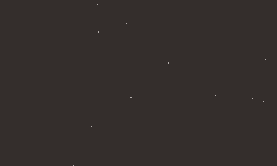

6/19/24 - (almost) A Year of Game Development [SEGFAULT]
Hello! Today I felt like creating a massive devlog document of my journey so far developing what is now called
Segfault (short for segmentation fault) for the Playdate. So, here we go!
I want to say I started working on Segfault at around June 30th of 2023. According to the last modified
date of everything in my folder for this project, this image was the first thing created:
A work of art, if I do say so myself.
This is actually the game's card-pressed image, located at /src/SystemAssets/card-pressed.png. I guess I didn't
really have a clue what I was working on at this point, so it makes sense.
I didn't start frequently committing to my git repository until September 10, when I FINALLY committed my changes.
Sitting at 55 changed files with 2,420 insertions, this commit, ambiguously named "backup", contains
most
of the
code which makes up the engine.
The README at this point in time:
I knew I wanted it to be some sort of text-based RPG, but that was about it.
The 2-8 hour time limit seemed like an interesting idea. I would definitely like to incorporate it into something
later on down the line, but as development continued I dropped it ¯\_(ツ)_/¯
Weirdly, the README says "coolgame" but I must've already decided on Overflow as a name, since there's a build of
the game under that name.
Speaking of which, here's what it looked like at the time!!
…aaaand that's about it. But hey, it works!
The map format is about the same here, except for the action format. Instead of JSON, like it is now, it was some
goofy proprietary thing I made. No clue what I was thinking, but at least I made the switch before things got too
complicated 😅
I'd also like to point out a mistake that would come back to bite me later. This function in funcs.lua:
Can you spot the issue here? XD
Basically, this massive table would get redefined every time getIDfromChar() is called. But I wouldn't
notice this until much further down the line. Onward!
Fast forward a couple commits (and a couple weeks), and I swapped my action format to JSON. At first I
wanted to use something like msgpack to compress all of my mapfiles down, but for some reason the Playdate
has difficulty reading binary files from disk (or maybe I'm just being incredibly stupid haha), so I dropped
the idea later on.
I decided on a class-based system for all of the collectibles you can get in the game here as well. From
experience, object oriented programming scales very well and makes it super easy to keep everything
organized. I don't know what I'd do without it!
I also added some basic player stats to the top left, as well as upgraded the battle engine to have a little
menu in the bottom left corner.
The next commit, also called "backup" (man, incredibly helpful commit names lol) added what was the
beginning of the title screen that is still in place today.
In this commit I added the first revision of the introduction as well. The alert boxes are very off center,
however XD
Saving was added here too!

At this point I must've woken up and realized in order for git to be helpful I should probably commit more
and name them half-decently, since after this every major change has its own commit.
I added some placeholder art (still haven't changed any of it haha), shops, and the first "attack game" in
commit 461179f, finally started throwing together the introduction to one of the
main characters in 3d09875,
and completed map preloading in 79aaaf8.
Eventually, I figured out that getIDfromChar() issue I mentioned earlier, which boosted map loading a
considerable amount on device, from 0.7 seconds to ~0.05! Ugh, that had been bugging me the entire time. I'm
glad I'm not still stuck with it.
Before the fix, preloading looked like this:
Afterwards, it looks like this!
To this day I'm still wondering if I should preload maps at all or just load them on the fly, since it's so
quick now. I'm pretty sure I'll get rid of preloading when the game releases. I may need the extra RAM,
haha.
In commit d80eb14 ("fixed battle damage rounding, cleaned up introchoices, updated
docs", February 29) my
documentation for the game became much more massive. I find that more Markdown is always better for big
projects. Personally, I use it for both ideas and TODO lists that I divide into high, medium, and low
priorities. Very helpful to have :)
I officially changed the name of the game from Overflow to Segfault in commit a4ec205!
Honestly, this wasn't
really a hard decision and I don't regret it, although Overflow does roll off the tongue better.
Achievements were added in cd918f1, in March of this year. Currently, I'm waiting
for the Playdate Squad's
pd-achievements standard to be finalized before I
do too much work on them. I suppose I could go ahead and
add what they have, but I'd rather not do anything substantial if they make some drastic changes down the
line.
I finished a bunch of status effects (such as regeneration, vigor, fortitude) in commit 7bd0424, which are
only utilized in battles at the moment. Around this time, my main focus was on the battle engine that I
assumed would be the most "exciting" part of the game, and I was constantly trying to figure out new ways to
make it more fun. Even now, the game is still a bit of a top-down walking simulator.
In commit f540897, I created the second attack game besides the standard "bar" game:
reload. It involves the
user cranking backwards and forwards and pressing A in quick succession. The faster you do this, the more
damage is inflicted. Not the most realistic thing ever, but I find it pretty fun!
284c40a added an item count to the "items" menu, which is a pretty huge deal
considering the sheer amount of
items I'll probably have in this game closer to release. It was already a pain trying to scroll through all
of them even in testing, so (for me at least) this is a very nice QoL change.
It took me way too long to add game restarting on death, which was added in May 27 in commit 2a40577. I
guess since I had been manually refreshing the game up to this point anyway, it didn't seem like too big of
a deal, but now that I'm kind of getting down to the wire on the game engine it occurred to me that this is
a no-brainer that should have been in the game from the start, haha.
A couple weeks ago I revamped the title screen. At first it was kind of a buggy mess, and editing save files
was a bit of a pain and not the most intuitive thing ever (you had to press B to access a menu that
displayed on the save file box itself… it was lame), but now all of the options are there when you press A
on a file, kind of like how The Legend Of Zelda does things.
And that brings us to today! Currently I'm working on a way to upgrade items and weapons, and polishing off
the engine.
Final thoughts
So far, I've had a great time working on this game. It's helped me learn so many concepts and tips, and it's
been fun seeing it all come together over time! I've written 6215 lines so far, which to be honest isn't
really that much for nearly a full-fledged product. I feel like I'll have written 15000 lines by the end of
this project, but we'll see!
Can you tell I'm putting off finalizing the story and creating all of the maps, though? 😆 It's just
so.. daunting. Like, it's all coming together, but it's difficult to make it all a cohesive whole. Or maybe
it's just scary to start <w<
I guess my goal for this project is to take my time and really make it look nice and feel really good to
play. I'd hate to make my first "real" game (the adventures of horse the horse hardly counts haha) some
rushed-out-the-door thing. So, maybe it'll be a while before anyone can actually play Segfault, but
hopefully it'll be worth it in the end!
Thanks for reading this kind of ranty blog post!! Hope you enjoyed(?) it :3
(Oh, by the way, if you ever want to try gamedev yourself, I highly recommend Playdate development, the SDK
is probably one of the most simple yet powerful SDKs I've ever used. Massive props to Panic for making it so
easy for people to make cool stuff for Playdate!!)
(and yes, i am embracing my inner :3, and there's nothing you can do to stop me!! hahahahaha)